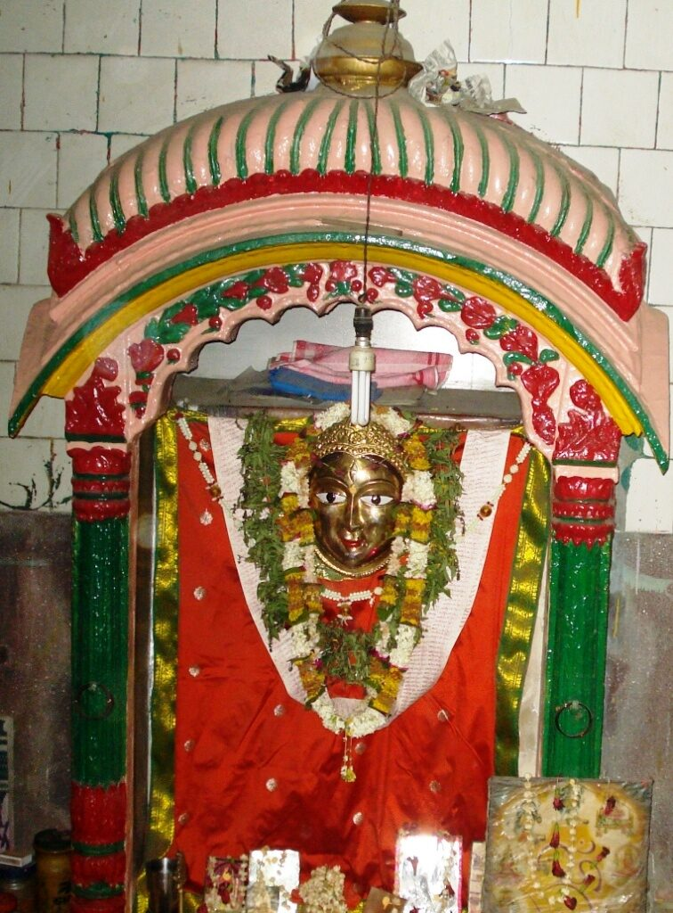
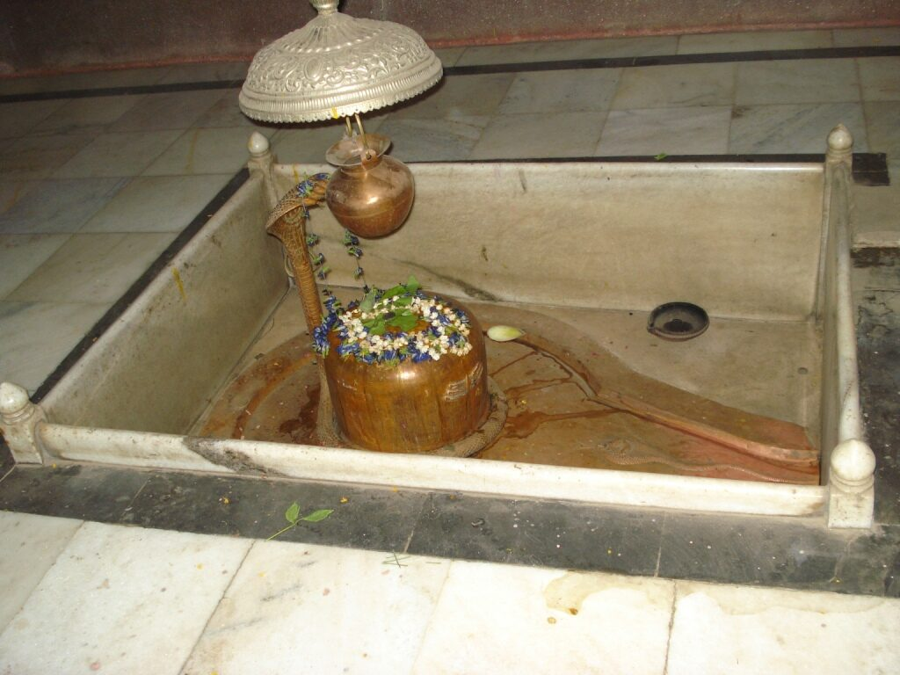

<?xml version="1.0" encoding="UTF-8"?><rss version="2.0"
	xmlns:content="http://purl.org/rss/1.0/modules/content/"
	xmlns:wfw="http://wellformedweb.org/CommentAPI/"
	xmlns:dc="http://purl.org/dc/elements/1.1/"
	xmlns:atom="http://www.w3.org/2005/Atom"
	xmlns:sy="http://purl.org/rss/1.0/modules/syndication/"
	xmlns:slash="http://purl.org/rss/1.0/modules/slash/"
	>

<channel>
	<title>Tripura Bhairavi &#8211; Varanasi Temples</title>
	<atom:link href="index.html" rel="self" type="application/rss+xml" />
	<link>../../../../index.html</link>
	<description>Temples of Varanasi as referred to in Kashi Khand</description>
	<lastBuildDate>Thu, 19 Jun 2025 05:16:46 +0000</lastBuildDate>
	<language>en-US</language>
	<sy:updatePeriod>hourly</sy:updatePeriod>
	<sy:updateFrequency>1</sy:updateFrequency>
	<generator>https://wordpress.org/?v=4.6.29</generator>
	<item>
		<title>TRIPURA BHAIRAVI</title>
		<link>../../../../devi-temples/tripura-bhairavi/index.html</link>
		<pubDate>Tue, 11 May 2010 10:31:57 +0000</pubDate>
		<dc:creator><![CDATA[admin]]></dc:creator>
				<category><![CDATA[Devi Temples]]></category>
		<category><![CDATA[Tripura Bhairavi]]></category>
		<category><![CDATA[bhairav]]></category>
		<category><![CDATA[bharvi]]></category>
		<category><![CDATA[durga]]></category>
		<category><![CDATA[durga ghat]]></category>
		<category><![CDATA[kapaal bharavi]]></category>
		<category><![CDATA[lalitha tripura sundari]]></category>
		<category><![CDATA[mir ghat]]></category>
		<category><![CDATA[shakti]]></category>
		<category><![CDATA[tripura]]></category>
		<category><![CDATA[tripura bhairavi]]></category>

		<guid isPermaLink="false">../../../../p=624.html</guid>
		<description><![CDATA[When Goddess was fighting a fierce battle against Durgasur (Kindly refer Durga Devi), she released various forms of energy (called Shakti) from her body.  These Shakti Devis released intense energy in form of fire balls to fight Durgasur and his army. (Kashi Khand, Chapter 72).  Finally the battle was won. (TRIPURA BHAIRAVI) One of those [&#8230;]]]></description>
				<content:encoded><![CDATA[<p>When Goddess was fighting a fierce battle against Durgasur (Kindly refer Durga Devi), she released various forms of energy (called Shakti) from her body.  These Shakti Devis released intense energy in form of fire balls to fight Durgasur and his army. (Kashi Khand, Chapter 72).  Finally the battle was won.</p>
<p></p>
<p style="text-align: center;"><strong>(TRIPURA BHAIRAVI)</strong></p>
<p>One of those Shaktis is  Tripura Bhairavi.  Devotees who worship this deity will attain success in their endeavours and they will gain  mental strength.  Out of more than 90 forms of Shaktis, only a few deities are present now.  Many of their temples or idols have ceased to be in existence and one or two of them are inside private houses where public worship is not allowed.</p>
<p><strong><span style="text-decoration: underline;">LOCATION OF TRIPURA BHAIRAVI</span></strong></p>
<p>Tripura Bhairavi is located at D.5/24, Mir Ghat. Devotees may approach this place from Dasaswamedh Vishwanath Gully and take the first right turn. This is a famous place.  This temple also houses Tripureshwar Shiv Ling (in the vicinity of Rudreshwar) which finds mention in Kashi Khand, Chapter 69. Devotees may worship these two lings also.</p>
<p><strong><span style="text-decoration: underline;"><br />
</span></strong></p>
<p style="text-align: center;"><strong>(TRIPURESHWAR)</strong></p>
<p>Location of  Tripura Bhairavi temple as per Google Map is given in the following Link :</p>
<p><a href="https://www.google.com/maps/place/Sri+Tripura+Bhairavi+Mandir/@25.3089238,83.0087798,17z/data=!3m1!4b1!4m5!3m4!1s0x0:0xfa0bbabfc18c4863!8m2!3d25.3089206!4d83.0109593">https://www.google.com/maps/place/Sri+Tripura+Bhairavi+Mandir/@25.3089238,83.0087798,17z/data=!3m1!4b1!4m5!3m4!1s0x0:0xfa0bbabfc18c4863!8m2!3d25.3089206!4d83.0109593<br />
</a></p>
<p>TYPES OF POOJA</p>
<p>The place of worship is open from 05.00 a.m. to 10.00 a.m. and from 06.00 p.m.to 10.00 p.m. Aarties are held in the morning and evening.  Devotees can worship through grill gate during other times.<strong> </strong></p>
]]></content:encoded>
			</item>
	</channel>
</rss>
